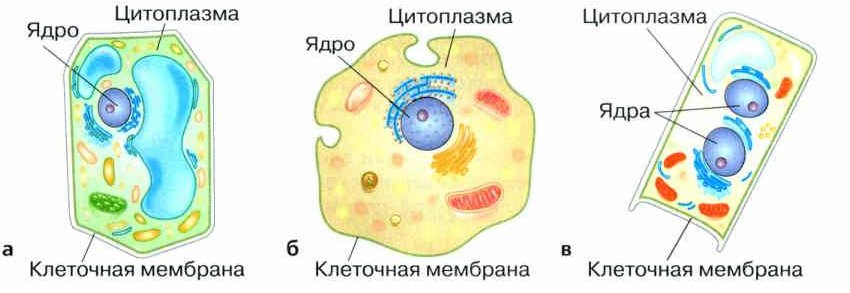
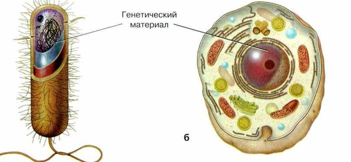
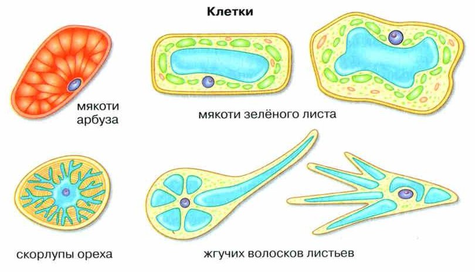
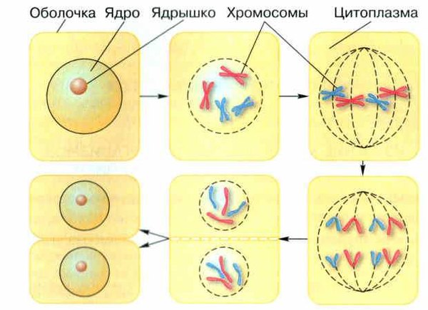

Строение клетки
Ты уже знаешь: все живые организмы, кроме вирусов, состоят из клеток. Из одной или из множества.
В одноклеточном организме одна клетка делает всё, что нужно для жизни: питается, дышит, растёт. Поэтому клетку называют самой маленькой единицей живого.
Клетки очень разные, но у всех общий план строения. У каждой клетки есть три обязательные части (рис. 49):
1. Клеточная мембрана — граница клетки. Она защищает клетку от того, что вокруг, и пропускает вещества внутрь и наружу.
2. Цитоплазма — полужидкое содержимое под мембраной. В ней находятся разные органоиды. Цитоплазма объединяет все части клетки, чтобы они работали вместе.
3. Генетический аппарат — самая важная часть. Он управляет всей жизнью клетки и даёт ей размножаться. У растений, животных и грибов он находится в ядре. В ядре лежат хромосомы — в них записана информация о клетке и обо всём организме. У бактерий ядра нет: их наследственный материал прямо в цитоплазме.
Вы уже знаете, что все живые организмы, за исключением вирусов, имеют клеточное строение. Живые организмы могут состоять из одной или множества клеток. В одноклеточном организме происходят все жизненно важные процессы, обеспечивающие его существование: питание, дыхание, обмен веществ, рост и т. д. Поэтому клетку считают наименьшей структурной и функциональной единицей живой природы.
Несмотря на всё многообразие, клетки имеют общий план строения. Каждая клетка имеет три обязательные составляющие: клеточную мембрану, цитоплазму и генетический аппарат (рис. 49).
Клеточная мембрана не только ограничивает внутреннее содержимое клетки, но и защищает её от неблагоприятных влияний окружающей среды. Через клеточную мембрану происходит регулируемый обмен веществ между содержимым клетки и внешней средой.
Под клеточной мембраной находится полужидкое содержимое клетки, называемое цитоплазмой (от греч. китос — сосуд и плазма — образование). В ней располагаются различные органоиды (от греч. органон — орган) и клеточные включения. Цитоплазма объединяет все клеточные структуры и обеспечивает их взаимодействие.
Генетический аппарат — важнейшая часть клетки. Именно он контролирует все процессы жизнедеятельности и определяет способность клетки к самовоспроизведению. В клетках растений, животных и грибов он заключён в ядре и отделён от цитоплазмы ядерной оболочкой. В ядре расположены носители наследственной информации о клетке и организме в целом — хромосомы (от греч. хрома — краска и сома — тельце). Они хранят информацию не только о клетке, в которой они находятся, в них также закодирована информация об особенностях всего многоклеточного организма. В ядре может находиться одно или несколько ядрышек. У бактерий ядра нет и наследственный материал расположен непосредственно в цитоплазме.

▲ Найди на каждой клетке ядро, цитоплазму и мембрану.
1. Почему клетку называют самой маленькой единицей живой природы?
2. Назови три обязательные части клетки и что делает каждая.
3. Где находится генетический материал у животного, а где — у бактерии?
Особенности строения клеток
У клеток разных царств живой природы есть свои особенности.
Проще всего устроены клетки бактерий: у них нет ядра. Поэтому бактерии — доядерные организмы (рис. 50, а). А растения, грибы и животные — ядерные организмы: в их клетках есть ядро (рис. 50, б).
В клетках растений и животных обычно одно ядро, а у грибов может быть два и больше.
У бактерий, грибов и растений снаружи от мембраны есть ещё оболочка (клеточная стенка). Она служит опорой и задаёт форму клетки. Вода, соли и многие вещества через неё проходят.
Только у растений в цитоплазме есть пластиды. Бесцветные пластиды хранят запас питательных веществ. Жёлтые и красные дают цвет лепесткам, осенним листьям и спелым плодам. А важнее всего зелёные — хлоропласты (от греч. хлорос — зелёный). В них есть хлорофилл, и в них идёт фотосинтез.
Клетки организмов, относящихся к разным царствам живой природы, имеют свои особенности. Наиболее просто устроены клетки бактерий. У них нет оформленного ядра, поэтому их относят к доядерным организмам (рис. 50, а). Растения, грибы и животных относят к ядерным организмам, так как в клетках этих организмов есть ядра (рис. 50, б).
Клетки растений и животных, как правило, содержат одно ядро, а в клетках грибов может быть два и более ядер. Клетки бактерий, грибов и растений, кроме мембраны, окружающей клетку, обычно имеют оболочку (клеточную стенку), которая выполняет опорную функцию и определяет форму клетки. Она проницаема для воды, солей и многих органических веществ.
Только клетки растений содержат в цитоплазме пластиды. Они бывают бесцветными или окрашенными в различные цвета. В бесцветных пластидах накапливаются запасы питательных веществ. Пластиды, окрашенные в жёлтый и красный цвета, определяют окраску лепестков цветов, осенних листьев, зрелых плодов. Наиболее важное значение имеют пластиды, окрашенные в зелёный цвет, — хлоропласты (от греч. хлорос — зелёный), содержащие хлорофилл. В хлоропластах происходит процесс фотосинтеза.

ядра нет: бактерии
ядро есть: растения, грибы, животные
«До-ядерные» — как будто ещё до того, как появилось ядро.
4. Почему бактерии называют доядерными организмами?
5. Какая часть есть только в клетках растений? Зачем она нужна?
6. У каких клеток есть оболочка и для чего?
Разнообразие клеток
Клетки растений, животных и грибов похожи по устройству, но различаются формой, размером и деталями строения.
Обычная клетка ядерного организма — около 0,05 мм. Клетки мякоти арбуза — несколько миллиметров: их видно без приборов. А длинные отростки нервных клеток человека бывают длиной до 1 метра!
Клетки бывают шаровидными, кубическими, звёздчатыми, цилиндрическими (рис. 51). Форма и размер зависят от того, какую работу клетка делает.
Клетки бактерий намного меньше — около 0,001 мм. Их с трудом видно даже в световой микроскоп. Сравним: обычная клетка больше бактерии в 50 раз (0,05 : 0,001 = 50).
У некоторых бактерий есть жгутики — от одного до тысячи. Они помогают бактериям двигаться. Бывают бактерии и без жгутиков.
Бактерии бывают разной формы: шарики — кокки, палочки — бациллы, спирали — спирохеты или спириллы. От формы зависит, как бактерия двигается и прикрепляется к поверхности.
Клетки растений, животных и грибов в целом сходны по своей организации, но могут отличаться формой, размерами и особенностями строения. Размеры клеток ядерных организмов составляют приблизительно 0,05 мм. Клетки мякоти плодов арбуза по величине достигают нескольких миллиметров и видны невооружённым глазом. А длинные отростки нервных клеток человека достигают длины 1 м.
Клетки могут иметь шаровидную, кубическую, звёздчатую, цилиндрическую или другую форму (рис. 51). Размеры и форма клеток разнообразны и в основном связаны с теми функциями, которые они выполняют.
Клетки бактерий значительно меньше. Их размеры обычно составляют около 0,001 мм, и их с трудом можно различить даже в световой микроскоп. Клетки некоторых бактерий имеют жгутики. Количество жгутиков может быть разным, в зависимости от вида бактерии на ней бывает от одного до тысячи жгутиков, но встречаются бактерии и вовсе без них. Жгутики нужны бактериям для передвижения в пространстве.
Форма клеток бактерий тоже довольно разнообразна. Наиболее распространены формы в виде палочек, шариков и спиралей. В зависимости от формы клеток, бактериям даны свои названия, например, бактерии округлой формы называются кокками, бактерии в виде палочек — бациллами, а бактерии в форме спиралей — спирохетами или спириллами. От формы клетки бактерии зависит её подвижность и способность прикрепляться к поверхности.

7. Во сколько раз обычная клетка больше бактерии?
8. От чего зависят форма и размер клеток?
Жизнедеятельность клетки
Клетка живёт: питается, дышит, растёт, размножается. В ней идёт обмен веществ — вещества поглощаются, образуются, расщепляются и выводятся.
Обмен веществ всегда связан с энергией. Чтобы построить сложное вещество из простых, нужно потратить энергию. А когда при дыхании сложные вещества разрушаются, энергия выделяется — и клетка тратит её на свои нужды. Ненужные и вредные вещества выводятся из клетки.
Клетки растут и размножаются. Новые клетки появляются делением: из одной материнской клетки получаются две дочерние.
Как это происходит (рис. 52): сначала каждая хромосома копирует себя — хромосом становится вдвое больше. Потом оболочка ядра на время исчезает, и копии хромосом расходятся к противоположным концам клетки. Там образуются два новых ядра. И в каждом — та же самая информация, что была в ядре материнской клетки.
Клетки всех организмов похожи: у них сходный набор органоидов, одинаково работает генетический аппарат и обмен веществ. Значит, при всех различиях у всех клеток очень много общего.
Для клеток характерны питание, дыхание, рост, размножение. В них происходят процессы обмена: поглощение, образование, расщепление и выделение веществ. Обмен веществ всегда сопровождается превращением энергии. Для создания сложных веществ из более простых нужно затратить энергию. Наоборот, при разрушении сложных веществ в процессе дыхания энергия образуется. Эта энергия используется на нужды клетки. Обмен веществ, связанный с превращением энергии, является важнейшим свойством живого. Вещества ненужные и даже вредные для организма, образовавшиеся в процессе обмена веществ, выводятся из клетки.
Клетки могут расти и размножаться. Новые клетки появляются путём деления — из одной материнской клетки получается две дочерние. Перед делением материнской клетки происходит удвоение числа хромосом, при котором каждая хромосома как бы копирует себя. Когда ядро делится, его оболочка на время исчезает и копии каждой хромосомы расходятся в противоположные концы клетки, где образуются два новых ядра (рис. 52). В этих ядрах оказывается та же самая наследственная информация, что и в исходном ядре материнской клетки.
Несмотря на различия в строении, клетки всех организмов имеют сходный набор органоидов. Не существует принципиальных отличий в работе их генетического аппарата и в процессах, связанных с обменом веществ. Таким образом, при всём многообразии различий все клетки живых организмов имеют много общего в строении и процессах жизнедеятельности.

▲ По этому рисунку — задание в «Моей лаборатории».
9. Что происходит с хромосомами перед делением клетки?
10. Чем дочерние клетки похожи на материнскую?
11. Когда в клетке выделяется энергия, а когда тратится?
Итоги и «Моя лаборатория»
Клеточная мембрана · Оболочка (клеточная стенка) · Цитоплазма · Генетический аппарат · Ядро · Органоиды · Хромосомы · Пластиды · Доядерные организмы · Ядерные организмы
- Какую функцию выполняет клеточная мембрана?
- Для каких клеток характерна клеточная стенка (оболочка)? Какова её роль?
- Какую роль выполняет генетический аппарат клетки?
- Какие процессы жизнедеятельности протекают в клетках?
- В чём принципиальное отличие в строении клеток бактерий от клеток растений, животных и грибов?
- Какие организмы относятся к доядерным, а какие — к ядерным? Объясните почему. Приведите примеры.
Какое значение имеет то, что в ядре каждой из двух новых клеток хромосом оказывается столько же, сколько их было в материнской клетке?
- Рассмотрите препарат при малом увеличении. Отметьте, какие части клетки вы видите.
- Рассмотрите препарат при большом увеличении. Найдите на нём окружающую клетку мембрану — оболочку; под ней вещество — цитоплазму. В цитоплазме видно ядро.
- Зарисуйте 1—3 клетки, хорошо видимые на препарате.
- Обозначьте мембрану (оболочку), цитоплазму, ядро.
- Сравните форму и строение клеток на разных препаратах.
- Сделайте вывод.
Изучив текст параграфа и рис. 52, объясните, как происходит деление клетки, изображённой на рисунке. Определите, какие органоиды, представленные на рисунке, принимают участие в делении клетки. Ответьте на вопросы: 1. Какие изменения происходят с этими органоидами? 2. Какова функция этих органоидов? 3. Какие особенности процесса деления клетки вы наблюдаете на рисунке? 4. К чему приводит процесс деления данной клетки? 5. Как вы думаете, какое биологическое значение это имеет?
- В делении участвуют ядро и хромосомы.
- Хромосомы копируются, оболочка ядра исчезает, копии расходятся к концам клетки, образуются два ядра.
- Хромосомы хранят наследственную информацию.
- Получаются две дочерние клетки с той же информацией, что у материнской.
- Так организм растёт, а новые клетки получаются такими же, как старые.
Некоторые клетки видно и без приборов: клетки мякоти арбуза, волокна крапивы (до 8 см!), желток куриного яйца — это одна клетка.
Цитология (от греч. китос — клетка) — наука о клетке. Гук открыл клетку ещё в 1665 году, но наукой цитология стала только в XIX веке. С лучшими микроскопами учёные изучили клетки разных организмов и поняли: все живые организмы состоят из клеток, и у всех клеток похожее строение. Так появилась клеточная теория — о ней вы узнаете в старших классах.
В XX веке цитология быстро развивалась благодаря электронному микроскопу и другим новым методам. Открытия о клетке помогают медицине, сельскому хозяйству и биотехнологии.
Некоторые клетки можно увидеть невооружённым глазом. Это клетки мякоти плодов арбуза, волокна крапивы (их длина достигает 8 см), желток куриного яйца — это одна клетка.
Цитология (от греч. китос — клетка) — наука о клетке. Хотя Р. Гук открыл клетку ещё 1665 г., цитология как наука сформировалась только в конце XIX века. Благодаря изобретению более совершенных микроскопов, учёные изучили строение клеток разных организмов и пришли к выводу, что все живые организмы состоят из клеток и, несмотря на разнообразие клеток, все они имеют сходное строение. На основании этих открытий были сформулированы положения клеточной теории, которые стали научной основой цитологии. С этими положениями вы познакомитесь в старших классах.
Бурное развитие цитологии в XX в. связано с использованием современных методов изучения клетки: электронной микроскопии, биохимических, биофизических, биотехнологических и других методов.
Изучение клетки имеет важнейшее значение для развития таких биологических наук, как физиология, генетика, молекулярная биология, биохимия и др. Открытия, сделанные в цитологии, широко используются для практической деятельности человека, особенно в медицине, сельском хозяйстве, биотехнологии.
Прочитай отрывок из книги И. И. Акимушкина «Занимательная биология». О каком органоиде клетки идёт речь?
«И вот, вооружившись микроскопом, биологи стали искать и нашли в клетке ещё несколько важных её органов, или, как говорят, органелл, которые прежде были заметны лишь в виде точек либо совсем не видны. Учёные увидели поперечнополосатые тельца. Они есть во всех клетках. И не в малом числе: обычно их около тысячи или несколько тысяч. Роль их очень ответственна. Они „энергетические станции“ жизни. Без них клетка мертва и бездеятельна, как машина без горючего…»
Прочитайте отрывок из книги «Занимательная биология», автора Акимушкина И. И. Используя дополнительные источники информации определите о каком органоиде клетки идёт речь?
И вот, вооружившись микроскопом, биологи стали искать и нашли в клетке ещё несколько важных её органов, или, как говорят, органелл, которые прежде были заметны лишь в виде точек либо совсем не видны. Учёные увидели поперечнополосатые тельца. Они есть во всех клетках. И не в малом числе: обычно их около тысячи или несколько тысяч. Роль их очень ответственна. Они «энергетические станции» жизни. Без них клетка мертва и бездеятельна, как машина без горючего. Они преобразуют энергию химических связей в энергию жизни. Без шума, без перегрева и без давления сжигают топливо жизни и в удобных «расфасовках» передают заключённую в нём энергию другим органеллам клетки. Работают они бесшумно и очень продуктивно: более 50 процентов энергии окисленного топлива идёт на полезные дела, совершающиеся в клетке.
Сначала попробуй найти сама в дополнительных источниках.
- Рисунок аккуратный и чёткий, детали точные.
- Рисуй только то, что видишь.
- Рисуй с настоящего объекта, а не из учебника.
- Простым, хорошо заточенным карандашом; отдельные детали можно закрасить.
- Крупно, чтобы были видны детали; пропорции соблюдать.
- Все детали подписаны выносками; подписи — строго горизонтально.
- Под рисунком подпись: что нарисовано и при каком увеличении.
Проверь себя
Ошиблась — не страшно, попробуй другую кнопку.
Граница клетки, пропускает нужные вещества
Как стены с дверью.
Полужидкое содержимое с органоидами
Как комнаты в доме.
Здесь хранятся хромосомы
Как сундук с чертежами.
Зелёные тельца, в них идёт фотосинтез
Как солнечные панели.
Твёрдый слой снаружи у растений, грибов и бактерий
Как забор вокруг дома.
Бактерия
У бактерий нет ядра.
Люся
Животные — ядерные организмы.
Денежное дерево
Растения — ядерные.
Гриб
Грибы — ядерные; бывает и два ядра.
Бацилла
Бацилла — бактерия-палочка.
1. Какие три части есть у каждой клетки?
2. Где хранятся хромосомы у растений и животных?
3. У кого нет ядра?
4. Что есть только в клетках растений?
5. Какая клетка видна без приборов?
6. Что происходит перед делением клетки?
Расскажи вслух
Строение клетки
- Три обязательные части: мембрана, цитоплазма, генетический аппарат.
- Мембрана ограничивает и защищает; цитоплазма с органоидами объединяет все части.
- Генетический аппарат управляет жизнью клетки; у растений, животных, грибов — в ядре, в хромосомах.
Клетки растений, животных, грибов и бактерий
- Бактерии — доядерные; растения, грибы, животные — ядерные.
- Оболочка (клеточная стенка) — у растений, грибов, бактерий.
- Пластиды — только у растений; хлоропласты — зелёные, в них фотосинтез.
Деление клетки
- Из одной материнской клетки — две дочерние.
- Перед делением хромосомы копируются, оболочка ядра исчезает, копии расходятся.
- В новых ядрах та же наследственная информация.